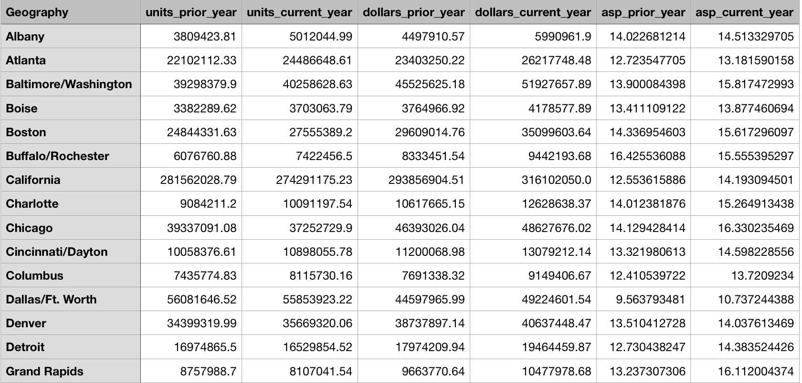
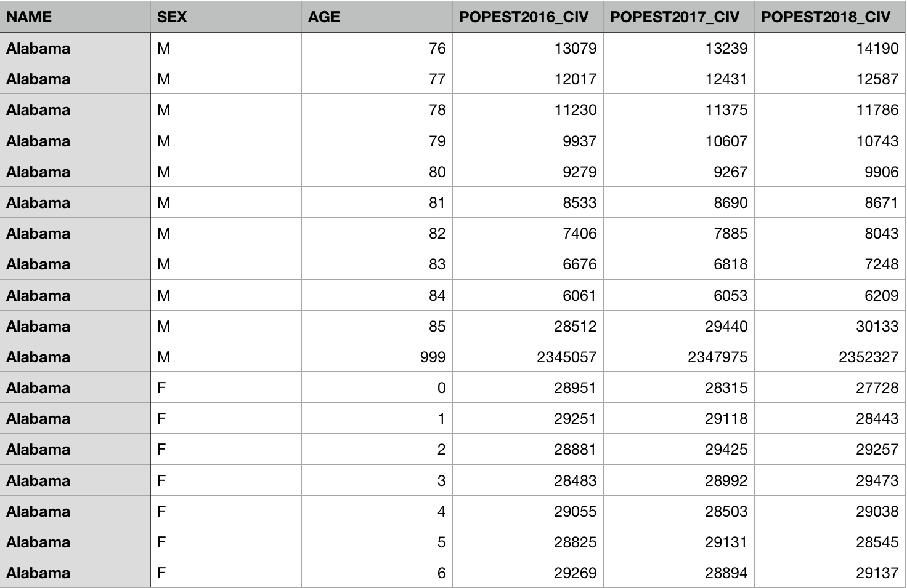
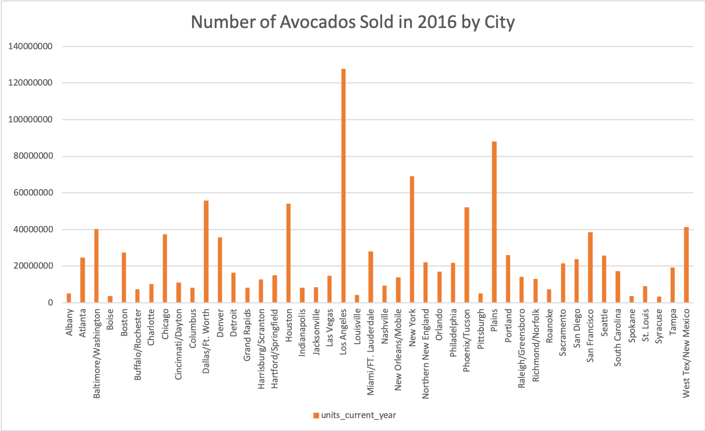
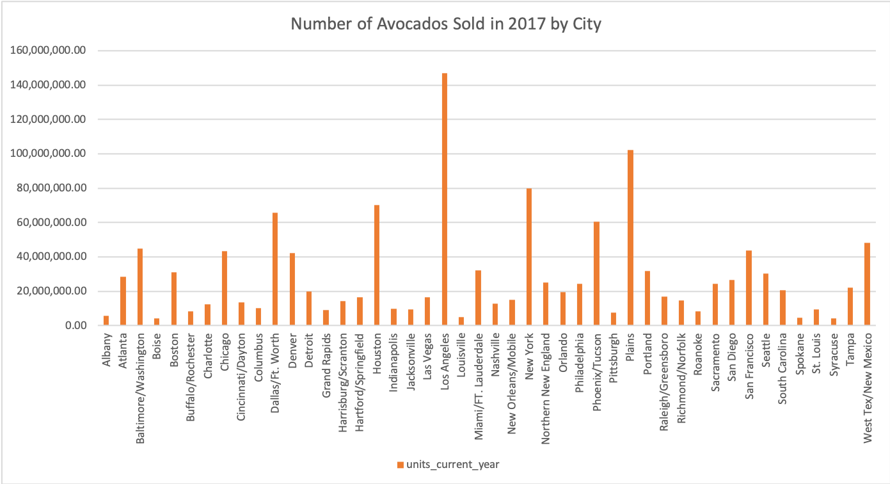
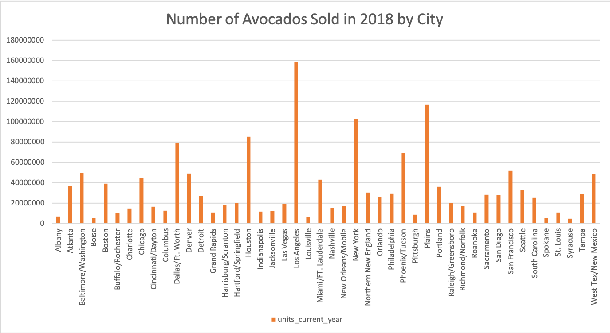

Data Spec
Our analysis utilizes two dataset topics. The first contains demographic information from 2016 to 2018,
while the second contains avocado consumption data from 2016 to 2018. More detail about
specifics regarding what each dataset contains is explained below.
The demographic data was taken from US Census Bureau, with information about
the number of people given age and sex in each state. The avocado consumption data
was taken from the Hass Avocado Board.
Our demographic dataset contains 6 columns:
- Name - state name
- Sex - either M or F, indicating gender
- Age - age of group (with 999 indicating all ages, accumulated)
- POPEST2016_CIV - estimated population with the specified gender and age in 2016
- POPEST2017_CIV - estimated population with the specified gender and age in 2017
- POPEST2018_CIV - estimated population with the specified gender and age in 2018
Our Hass avocado consumption dataset contains 7 columns:
- Geography - city/state/region name (according to the regions specified by Hass Avocado Board)
- units_prior_year - number of avocados sold in the previous year
- units_current_year - number of avocados sold in the current year
- dollars_prior_year - total dollar amount sales of avocados for all units of avocados in previous year
- dollars_current_year - total dollar amount sales of avocados for all units of avocados in current year
- asp_prior_year - average selling price (dollars per unit) for previous year
- asp_current_year - average selling price (dollars per unit) for current year
Link to Full Data
Demographic Data CSV
Hass Avocado Consumption 2016 Data CSV
Hass Avocado Consumption 2017 Data CSV
Hass Avocado Consumption 2018 Data CSV
Sample of Our Data
Avocado Consumption Data Sample

Demographic Data Sample

Tech Report
Where is the data from?
We used two datasets. The avocado dataset is from the Hass Avocado Board (https://hassavocadoboard.com/category-data/). Our demographic data, which has data on the number of people of each given age and sex in each state, is from the US Census Bureau (https://www.census.gov/data/tables/time-series/demo/popest/2010s-state-detail.html)
How did you collect your data?
Both sources allowed us to download the data in the form of CSV files directly from their website.
Is the source reputable?
The US Census Bureau is the most reputable and comprehensive source of demographic data in the United States. From the Hass Avocado Board (HAB’s) website: “HAB is the only avocado organization that equips the entire global industry for success by collecting, focusing and distributing investments to maintain and expand demand for avocados in the United States.” HAB conducts market research for growers and marketers, regularly updates their website, and provides free-access to up-to-date avocado market data. We decided as a group that HAB probably has the most reliable Hass avocado data in the US.
How did you generate the sample? Is it comparably small or large? Is it representative or is it likely to exhibit some kind of sampling bias?
The sample of our data shown above was generated by taking 15 rows of the avocado consumption data, and taking the tail end 10 (plus the accumulated gender data) male demographic data and the starting 6 female demographic data for a single geographic location. This is a relatively small subset of our entire dataset and is somewhat representative of the type of data we might expect across different regions. However, taking the first few rows definitely has sampling bias, and we are likely only showing data from a certain year/region. For the purposes of visually showing a sample, though, we think this type of “handpicking” was okay.
Overall, our dataset represents our hypothesis well. We are interested in exploring avocado consumption trends across major regions in the US, separated by age group. This is exactly the data we have collected. Obviously, any insights from our project can only apply to the US and to Hass avocados.
Are there any other considerations you took into account when collecting your data? This is open-ended based on your data; feel free to leave this blank. (Example: If it's user data, is it public/are they consenting to have their data used? Is the data potentially skewed in any direction?)
One small concern we had was that HAB only has data for Hass avocados, which is one of many breeds of avocados. However, our concerns were mitigated when we did some research: “Hass avocados made up 97 percent of avocado sales in the United States in 2019” (from https://www.statista.com/statistics/191355/fresh-avocado-category-share-in-2011/).
How clean is the data? Does this data contain what you need in order to complete the project you proposed to do? (Each team will have to go about answering this question differently, but use the following questions as a guide. Graphs and tables are highly encouraged if they allow you to answer these questions more succinctly.)
Overall, since we collected our data as CSV files from pretty reputable sources, the data was quite clean. However, we did have to manually edit some fields in the datasets to fit our hypothesis. In that sense, we had to do more work reformulating the data rather than “cleaning” out noise.
How many data points are there total? How many are there in each group you care about (e.g. if you are dividing your data into positive/negative examples, are they split evenly)? Do you think this is enough data to do what you hope to do?
In total, our avocado dataset has 162 rows, and our demography dataset has 9048 rows (both spanning across three years). There is one rows for each region and 54 rows for each year in the avocado dataset; there are 87*2 = 174 rows (one for each age 0 through 86, then one more for everyone > 85) for each region and 9048 rows for each year in the demographic dataset (one column for each year in each row). These values are constant because our data is structured in such a way that there must be a certain number of data points collected per region, per year. Thus, our data is split quite evenly.
We feel good about the amount of data we have. Although in an ideal world, we would have access to data for a longer timeframe and more granular geography data, HAB only provided data from 2016, separated by major regions in the US. We thought that three years was still a decent amount of time to see a trend in consumption, and that it would be better to produce high-quality analysis on reliable data for three years rather than conduct long-term analysis on unreliable data.
Are there missing values? Do these occur in fields that are important for your project's goals?
There are no missing values in the data we collected. We made sure that the data we found from our two sources corresponds appropriately (i.e., we have data for each state and reason so they can be appropriately joined).
Are there duplicates? Do these occur in fields that are important for your project's goals?
There are no explicit duplicate data entries, but there are entries that encapsulate other entries. That is, in our demographic data, the gender is indicated with 0, 1, or 2. A gender of ‘1’ indicates male, while a gender of ‘2’ indicates female. A gender of ‘0’ indicates ‘total’, meaning that it is an accumulated statistics reporting the combined numbers for male and female. This statistics duplicates the existing male/female separated statistics, which we preserved for purposes of control, so we removed the rows that contained the accumulated gender statistics. The demographic data also contained a state id and a state name -- this duplicates information, therefore we removed the columns with state id, since we want the explicit state name in order to match our data with the Hass avocado data regions. Thus, overall, the duplicates do not occur in fields that are important for our project goals, thus little cleaning was necessary to deal with such duplicates for analysis purposes.
How is the data distributed? Is it uniform or skewed? Are there outliers? What are the min/max values? (focus on the fields that are most relevant to your project goals)
Within our avocado dataset, locations such as Los Angeles, New York and Plains seem to have significantly higher than average avocado consumption. While locations such as Syracuse, Boise, Spokane and Louisville have significantly lower than average avocado consumption.
The maximum value for the number of avocados sold (avocado consumption) in a city for 2016, 2017, and 2018 are 127888547.9, 146890808.9 and 158718858.6 in Los Angeles respectively. The minimum value for the number of avocados sold (avocado consumption) in a city for 2016, 2017, and 2018 are 3459560.04, 4049696.69 and 4757765.13 in Syracuse respectively. The maximum value from our demographics dataset is 468110 of females from California aged 85 years old in 2018. The minimum value from our demographics dataset is 475 males from Alaska aged 84 years old in 2017.



Are there any data type issues (e.g. words in fields that were supposed to be numeric)? Where are these coming from? (E.g. a bug in your scraper? User input?) How will you fix them?
We did not have any significant data type issues but did change a few data types in order to make the database more readable. There is a column in our data obtained from the US Census corresponding to gender (with flags 0, 1, 2 for both genders, male, and female respectively). As explained below, we removed rows corresponding to both genders, and replaced 1 and 2 with “F” for female and “M” for male. These columns were initially Text although their entries corresponded to integers, but this problem was resolved by changing the integers to characters.
Do you need to throw any data away? What data? Why? Any reason this might affect the analyses you are able to run or the conclusions you are able to draw?
We ended up disregarding/combining some data that came in our original data sets as they did not relate to what we are trying to show. For example, in our data set from the Haas Avocado board, the consumer information is divided up by four week periods (or month of the year). However, we are looking into data on a year-to-year basis, so in cleaning our data we took the sum of all of these rows. Furthermore, in our Hass Avocado data set, we removed the “Variety”, “Segment”, “Timeframe”, and “Period” columns as we now know that every row corresponds to one year.
In our data set collected from the Census, the SUMLEV, REGION, DIVISION, and STATE columns were removed since we were able to refer to the NAME column to get the state name, and other columns are not relevant to our project. Finally, we removed the columns in this data set which do not correspond to the years from which we are looking at (we are looking at years 2016-2018).
Summarize any challenges or observations you have made since collecting your data. Then, discuss your next steps and how your data collection has impacted the type of analysis you will perform. (approximately 3-5 sentences)
Our main challenge was finding reliable datasets that had the information—to our surprise, avocado data was easier to find demographic data split by state and age. We thought it was interesting that HAB split the US differently from the conventional major regions we’re familiar with(For instance, California is entirely its own region, perhaps because it's such a major consumer of avocados in the US.) Our next step is to figure out how to use the two cleaned and preprocessed databases together; it would be interesting to analyze each database on its own then run regress one against the other while controlling for variables in the two datasets. Our data will heavily impact our analysis downstream since the databases we have right now determine the variables (regions, age groups, avocado breeds) we can tap into and control for during the hypothesis testing phase.